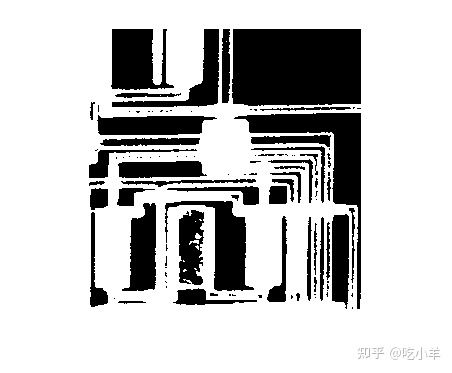
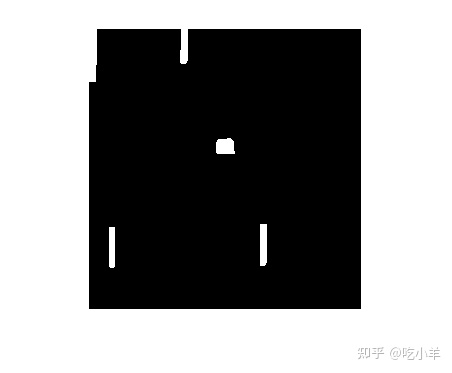
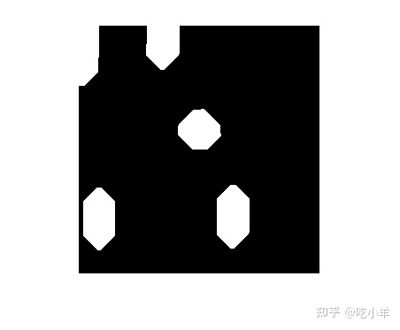

Home
您可以使用形态学开操作从图像中删除小对象，同时保留图像中较大对象的形状和大小。
在此示例中，您使用电路板图像上的形态学开操作从图像中去除所有电路线。输出图像仅包含微芯片的矩形形状。
一步打开图像
您可以使用imopen函数一步执行腐蚀和膨胀。
将图像读入工作区并显示。
BW1 = imread('circbw.tif');
figure
imshow(BW1)

创建一个结构元素。结构元素应该足够大以在腐蚀图像时除去线条，但又不应当大至足以除去矩形。它应该全部为1的元素组成，因此它会除去前景像素的大连续块以外的所有内容。
SE = strel('rectangle',[40 30]);
对图像开操作。
BW2 = imopen(BW1, SE); imshow(BW2);
通过执行腐蚀然后膨胀来开操作图像
您也可以顺序执行腐蚀和膨胀。
用结构元素腐蚀图像。这将删除所有线条，但也会缩小矩形。
BW3 = imerode(BW1,SE); imshow(BW3)

要将矩形恢复为原始大小，请使用相同的结构元素SE来放大腐蚀的图像。
BW4 = imdilate(BW3,SE); imshow(BW4)
通过顺序执行操作，您可以灵活地更改结构元素。创建一个不同的结构元素，并使用新的结构元素来膨胀腐蚀的图像。
SE = strel('diamond',15);
BW5 = imdilate(BW3,SE);
imshow(BW5)

======================================================================
我的测试结果及程序
下面是我测试的代码：

注：本文根据MATLAB官网内容修改而成。